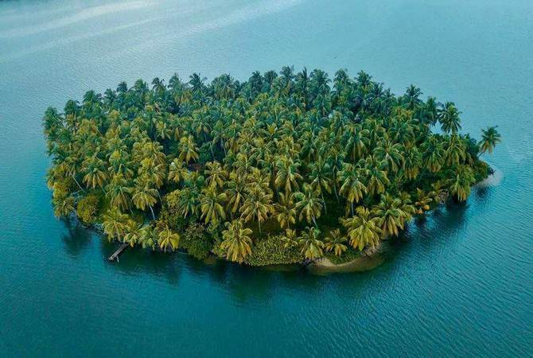
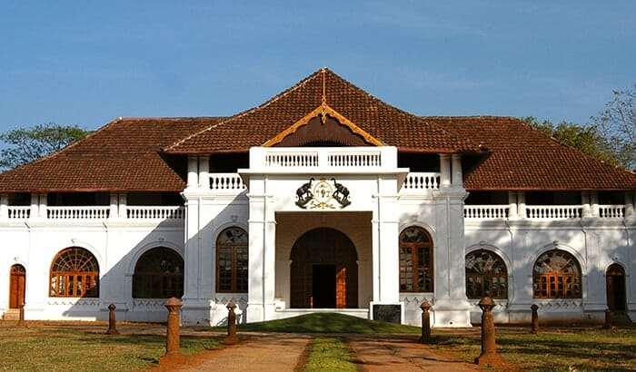

Kannur
Kannur is one of the 14 districts along the west coast in the state of Kerala, India. The city of Kannur is the district headquarters and gives the district its name. The old name, Cannanore, is the anglicized form of the Malayalam name "Kannur". Kannur district is bounded by Kasaragod District to the north, Kozhikode district to the south, Mahé district to the southwest and Wayanad District to the southeast. To the east, the district is bounded by the Western Ghats, which forms the border with the state of Karnataka (Kodagu district). The Arabian Sea lies to the west. Paithalmala is the highest point in Kannur District (1,372m). Enclosed within the southern part of the district is the Mahé district of the Union Territory of Puducherry. The district was established in 1957
Top Destinations

Muzhappilangad Beach
The Muzhappilangad Drive-in Beach at Kannur is one referred to with many superlatives- as the longest drive-in beach in the whole of India, as one of the cleanest beaches of Kannur and most importantly, as one of the best drive-in beaches that the entire Asian continent has to offer! Being Kerala's only drive-in beach, it attracts the attention of many tourists around the year. The whole concept of drive-in beaches is that you can drive right on the sandy shores of the beach- it is not very often that you get to drive along a 4 km long shoreline that offers an open road with no traffic and a stu view.
Kavvayi Islands
Kavvayi is surrounded by small islands called Kadappuram, which directly face the Arabian sea. Access to these small islands is only by small boats or traditional thonis. These islands are becoming smaller in size, and inhabitants have been moving to cities. The Kavvayi Backwater, located near Payyannur, is the third largest backwaters in Kerala and the largest one in north Kerala. Locally called as Kavvayi Kayal or the backwaters of Kavvayi, this lesser known lake of northern Kerala is fed by five rivers viz. River Kavvayi and its tributary streams Kankol, Vannathichal, Kuppithodu, and Kuniyan.[2] Kavvayi backwaters is named after the Kavvayi island close to Payyannur. Kavvayi used to be an inland port and a major administrative center during the past centuries and during British East India Company rule.
Arakkal Museum
The Arakkal Museum in Kannur city is one of the most significant and frequently visited attractions of the south that celebrates the memory and grandeur of Kerala's only Muslim royal family- the Arakkal Ali Rajas. Previously a majestic palace of the royal family and their actual place of residence, this museum is a true testimony to the impeccable Muslim architecture and design. The Durbar Hall of this palace, which was once the official venue of gathering for the kings and their nobles, has now been converted into the Arakkal Kettu Museum and is managed by the Arakkal Family Trust